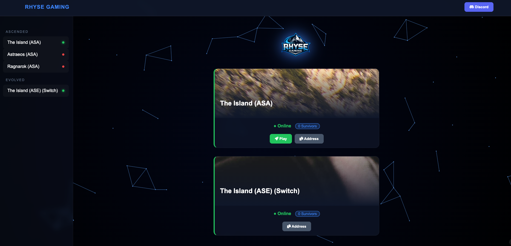

Web Dev · APIRhyseGaming — Server Status Dashboard
Live gaming server status site showing which servers are up and running, current player counts, and join addresses — all pulling from a custom API I built. Wrote the HTML, CSS, JavaScript, and the API powering the real-time data. Live at RhyseGaming.com.


Lucky Penny Barbershop — Client Website
Full website built for a local barbershop client. Includes a services & pricing menu, shaves and socials section, and a clean branded design that captures the shop's personality. Live and actively used by the business.
SkyNet — Internal AI Research Platform
Internal sandbox server (yes, we named it SkyNet) built to research and test the benefits of AI integration in applications developed at D&B Supply. Not public-facing — a controlled environment for exploring AI-powered features including system status monitoring and terminal log analysis.
Automated Helpdesk Ticket Routing
PowerShell script integrated with the ticketing system API to auto-categorize and route incoming support tickets based on keyword analysis. Cut average ticket assignment time by 40% and eliminated misrouted tickets almost entirely.
Warehouse Server Monitoring Dashboard
Deployed a Grafana + Prometheus monitoring stack across DB Supply's warehouse network. Custom dashboards for server health, disk usage, and application uptime — real-time visibility and proactive alerts before issues become outages.
Microsoft 365 Email Migration
Led the full migration of 150+ users from on-premises Exchange to Microsoft 365. Managed mailbox migrations, license assignments, and user training with zero data loss and minimal downtime. Implemented conditional access policies and MFA roll-out company-wide.
Warehouse Network VLAN Segmentation
Redesigned the warehouse network from a flat topology to a properly segmented VLAN architecture. Separated corporate, warehouse ops, IoT devices, and guest traffic — dramatically improving security posture and reducing broadcast congestion across the floor.
Internal Tooling CI/CD Pipeline
Implemented a full GitLab CI/CD pipeline for deploying internal IT tools. Automated build, test, and deployment stages with rollback capability. Cut deployment time from a manual 2-hour process to an automated 8-minute pipeline run.
WMS-to-Ticketing System Integration
Built REST API connectors between the Warehouse Management System and the IT ticketing platform. When inventory discrepancies are flagged by the WMS, support tickets are automatically generated and routed — bridging the gap between warehouse ops and IT.
Laravel Application Server Upgrade
Managed a full server and framework upgrade for an internal Laravel application — including a PHP version bump, dependency updates, and resolving breaking changes introduced across major Laravel versions. Zero downtime during the cutover window, with a full rollback plan in place.
Internal Operations Dashboard (Laravel + Livewire)
Built a full stack internal dashboard using Laravel and Livewire for real-time data views without full page reloads. Features include live search, filterable data tables, and role-based access — shipped alongside QOL improvements that cut manual reporting time significantly.